Con un promedio de 25 alumnos por clase –dos o tres integrados– y didácticas anticuadas, el diseño argentino parece estar pensado para el agotamiento mental de los docentes y el estancamiento de los estudiantes.
La situación de la enseñanza de la matemática en la Argentina es trágica y, una vez más, los resultados recientemente publicados de las Pruebas Aprender lo confirman. Solo 1 de cada 4 estudiantes de 15 años puede resolver un ejercicio de regla de tres simple (si 3 galletitas cuestan 15 pesos, ¿cuánto cuestan 5 galletitas?).
A los estudiantes argentinos les va peor en matemática de lo que les va a los países que invierten en educación la mitad por estudiante de lo que invierte la Argentina, como Perú o Colombia.
Naturalmente surge la pregunta: ¿cómo se enseña matemática en la Argentina? ¿Y en el resto del mundo? Para intentar acercarnos a una respuesta, decidimos comparar dos perspectivas de enseñanza de la matemática: el enfoque psicogenético (que es el que se aplica en la mayoría de las instituciones en Argentina) y el método C.R.A (Concreto-Representativo-Abstracto), el cual es aplicado por los países con mejor rendimiento en matemática. Lo que encontramos es peor de lo que creíamos. Mucho peor.1
Resumen ejecutivo
Comparamos dos métodos de enseñanza de la matemática básica en primer grado: el C.R.A, (de lo Concreto, a lo Representativo, a lo Abstracto), basado en un enfoque desarrollado en los países que se destacan en las pruebas internacionales, y el psicogenético, que es el más utilizado para la enseñanza de la matemática en Argentina.
Encontramos grandes diferencias entre las dos propuestas. Como ocurre con la enseñanza de la lectura y la escritura, en los manuales argentinos no se enseña explícitamente lo que se debe aprender. En alfabetización, no se enseñan explícitamente los sonidos de las letras. En matemática, no se enseñan explícitamente cosas tan simples como la suma o la multiplicación.
Los docentes argentinos no cuentan con materiales y bibliografía con un plan organizado, paso a paso. Por el contrario, se insiste en una metodología fundamentada en teorías descartadas por la ciencia hace décadas.
En los libros que implementan métodos basados en evidencia científica, las enseñanzas son (a) explícitas, (b) con énfasis en el apoyo visual y concreto, y (c) con clases bien estructuradas en etapas definidas. En los libros basados en el enfoque psicogenético utilizados en Argentina, ninguna de esas tres cosas se cumple con claridad.
Nótese que estas diferencias son muy parecidas a las diferencias que existen entre las perspectivas con respecto a la alfabetización. Para facilitar esta comparación, la tabla de abajo muestra ejemplos en la enseñanza de lengua y matemática para cada uno de esos tres conceptos
|
Perspectiva C.R.A |
Perspectiva psicogenética |
|
|---|---|---|
Explicitación de los contenidos En alfabetización, ¿se enseña el sonido de cada letra? ¿Se entrena a los estudiantes a reconocer esos sonidos y a asociarlos con su representación gráfica? En matemática, ¿se enseñan los algoritmos para sumar y multiplicar? |
Sí |
No |
Apoyo concreto y visual En alfabetización, ¿se hace énfasis en el sonido concreto del habla (fonemas), para luego pasar a su representación visual y finalmente al concepto abstracto de letra? En matemática, ¿se juega con elementos concretos, para luego usar dibujos y finalmente aprender el concepto abstracto de número en su forma arábiga? |
Sí |
No |
Organización del aprendizaje en etapas diferenciadas ¿La enseñanza se organiza en etapas con funciones diferenciadas para el aprendizaje? Por ejemplo: aprendizaje por indagación entre pares, aprendizaje por instrucción directa, y aprendizaje a través de actividades (tareas concretas o juegos que invitan a participar activamente). |
Sí |
No |
En conclusión, el enfoque psicogenético dominante en Argentina está poco fundamentado en datos e investigaciones científicas. Con un promedio de 25 alumnos por clase –dos o tres integrados– y didácticas anticuadas, el sistema argentino parece estar diseñado para el agotamiento mental de los docentes y el estancamiento de los alumnos.
"La comprensión de la mente y el cerebro humano es esencial para mejorar la educación y el bienestar de las personas".
-Stanislas Dehaene
"Si la ayuda y la salvación han de llegar sólo puede ser a través de los niños. Porque los niños son los creadores de la humanidad".
-María Montessori
01Introducción y motivación
La tragedia educativa argentina es peor en matemática
Solo 1 de cada 4 estudiantes de 15 años puede resolver un ejercicio de regla de tres simple (Si 3 galletitas cuestan 15 pesos, ¿cuánto cuestan 5 galletitas?). En las pruebas PISA de 2022, en las que se evaluaron muestras de estudiantes de 15 años de edad, esta es la tabla de posiciones en América Latina:
|
País |
Puntaje en matemática |
|---|---|
|
Chile |
412 |
|
Uruguay |
409 |
|
México |
395 |
|
Perú |
391 |
|
Costa Rica |
385 |
|
Colombia |
383 |
|
Brasil |
379 |
|
Argentina |
378 |
|
Panamá |
357 |
|
Guatemala |
344 |
|
El Salvador |
343 |
|
Rep. Dominicana |
339 |
|
Paraguay |
338 |
Lo impresionante de esta tabla es que el país de Sarmiento tiene más del doble de PBI per cápita que algunos de los países a los que les fue mejor, como Perú o Colombia. También nos fue peor que a Brasil, y tenemos un PBI per cápita 50% mayor (según registros de 2023).
Esta tragedia es, por supuesto, multicausal. Pero decir eso es decir todo y nada al mismo tiempo. La pregunta es cuáles son esas causas y cuánto influye cada una en esta tragedia educativa
Al contrario de lo que ocurre con la enseñanza de la lectura y la escritura, un factor poco estudiado a la hora de entender los malos resultados en matemática es el de los métodos y perspectivas de enseñanza utilizados.
El hecho de que la educación dependa de cada provincia dificulta realizar un buen diagnóstico. Los especialistas a los que consultamos nos aseguraron que no existen estudios recientes comparando cómo se enseña matemática aquí y en países con mejores resultados.
En este informe nos propusimos dar un primer paso en esa dirección.
El contexto: la querella de los métodos
Al contrario de lo que ocurre con la matemática, está bastante claro cómo se enseña a leer y escribir en la Argentina. No sólo porque todas las provincias publicaron en mayo de 2024 sus planes de alfabetización en un documento unificado y accesible (resolución 471 del Consejo Federal de Educación), sino porque es un debate que se viene dando hace décadas.
En 1962 la pedagoga argentina Berta Perelstein de Braslavsky publicó "La querella de los métodos en la enseñanza de la lectura" dando cuenta de un debate que ya entonces era algo antiguo. En 1979 Emilia Ferreiro y Ana Teberosky publicaron el seminal libro "Los sistemas de escritura en el desarrollo del niño".
Pero, a pesar de que el debate es antiguo, en los últimos años los avances científicos fueron tantos, no sólo en neurociencia, sino en la ciencia de la lectura en general, que hoy en día existen una serie de principios generales del aprendizaje demostrados como válidos más allá de toda duda razonable y, sobre todo, más allá de los debates válidos de aquellos tiempos.
Uno de esos principios es el de que después de una etapa de exploración, cuando se le plantea una pregunta a los alumnos, es conveniente enseñar de forma explícita lo que se desea que los estudiantes aprendan. En alfabetización eso implica enseñar de forma explícita, sistemática y gradual el sonido de las letras. A un ritmo de dos letras por semana, como el español tiene sólo 24 fonemas (sonidos del habla), en tan solo 12 semanas un chico puede alfabetizarse. Es lo que ocurría en las escuelas antiguamente: la enorme mayoría aprendía a leer en primer grado.
Andrés y Victoria, dos de los autores de este escrito, venimos denunciando hace algunos años que ese principio viene siendo ignorado en la mayoría de los profesorados argentinos. A la hora de alfabetizar se le dice a los futuros maestros que no enseñen el sonido de las letras. Es más: en algunas instituciones se lo prohíben porque dicen que va en contra del diseño curricular.
Hemos publicado videos y documentos al respecto. En particular, Victoria acaba de publicar el libro No Aprendimos Nada, donde, entre otras reflexiones, menciona la insensatez de seguir desaconsejando enseñar el sonido de las letras cuando toda la evidencia confirma que es mejor hacerlo. Andrés, además, publicó un documento en el que recopila la evidencia a favor de la enseñanza del sonido de las letras al alfabetizar y otro documento mostrando evidencia de que a muchos docentes les prohíben enseñar el sonido de las letras porque muchas supervisoras/os y directoras/es siguen creyendo que eso es perjudicial para los niños.
A la hora de iniciar este estudio, sabíamos que en alfabetización se han impuesto ciertas creencias sobre cómo enseñar que han sido descartadas por la ciencia hace años. La pregunta que nos hicimos fue, ¿estará pasando lo mismo en matemática? La respuesta que encontramos es que la situación es peor –mucho peor– de lo que pensábamos.
Lo más llamativo que encontramos
Lo que hicimos en este estudio fue comparar cómo se enseña matemática en los manuales que utilizan un enfoque desarrollado en los países que se destacan en las pruebas internacionales (el método C.R.A.), con los manuales más comunes que se usan en la mayoría de las escuelas argentinas (públicas y privadas) y que siguen una metodología muy similar a la utilizada en la mayor parte de las provincias argentinas. En la siguiente sección justificamos la decisión de hacer esta comparación. Antes, a modo de spoiler de los resultados obtenidos, contamos aquí un resumen.
Lo más llamativo que encontramos en los manuales que se basan en la perspectiva psicogenética no es la falta de claridad a la hora de enseñar lo que hay que aprender, que en sí mismo es grave. Tampoco la falta de un apoyo visual y sensorial, ni que el progreso sea confuso y poco sistemático. No. Lo más sorprendente es la ausencia de una explicación clara sobre cosas tan sencillas como una suma.
¿Cómo hacemos para sumar 5 + 3? Si estás leyendo este texto es probable que sepas que el resultado es 8 sin hacer la cuenta: lo sabés de memoria. Pero antes de automatizarlo todos descubrimos algo que en su momento nos pareció casi un milagro: si sumamos dos números, podemos tomar el mayor de ellos y contar hacia adelante una cantidad de pasos dada por el menor de ellos. Al hacer 5 + 3, en una mano ponemos cinco dedos y contamos hacia adelante tres pasos diciendo "seis, siete, ocho". El último número que pronunciamos, el ocho, es el resultado de la suma. Milagro.
Que los chicos hacen esto se puede observar bellamente en el hecho de que a partir de cierta edad el tiempo que tardan en responder correctamente a una suma es directamente proporcional al menor de los sumandos. Tardan lo mismo en sumar 5 + 4 que 6 + 4, pero eso lleva el doble de tiempo que sumar 5 + 2 o 6 + 2, porque el menor de los sumandos en estos últimos dos casos es la mitad que en los dos anteriores (2 es la mitad de 4).
Pasado el tiempo, los chicos memorizan el resultado de estas sumas y el tiempo de respuesta deja de depender del menor de los sumandos. La figura de abajo es de un artículo que publicamos recientemente en la Reunión Anual de la Asociación Argentina de Ciencias del Comportamiento (AACC), donde utilizamos datos de Mora, un juego que desarrollamos para que chicos y chicas aprendan a sumar en el celular. Se ve claramente cómo la dependencia de los tiempos de respuesta con el menor de los sumandos aparece cerca de los 6 años y desaparece cerca de los 10:
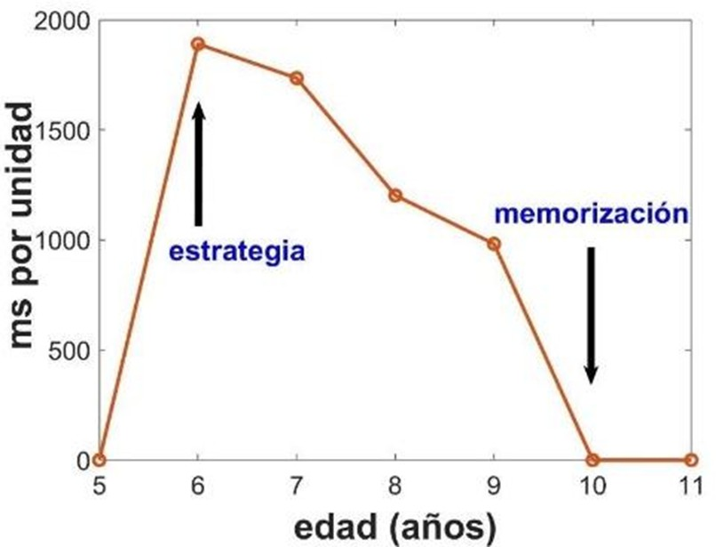
En los libros basados en la perspectiva C.R.A., esta estrategia se explica claramente a los chicos luego de desafiarlos con algunas sumas para que puedan explorar por su cuenta diversas estrategias. En un apartado llamado "sumar contando hacia adelante", a los estudiantes se les enseña explícitamente esta estrategia. En los libros que siguen un enfoque psicogenético, en cambio, no existe tal explicación. En ninguna parte. Ni siquiera en la guía docente: si un docente hace tiempo que no enseña en primer grado, no se le cuenta que esta es una de las dos estrategias para sumar (la otra, la primera que se aprende, es sumar levantando primero la cantidad de dedos de uno de los sumandos, luego la del otro, y por último contando todos los dedos levantados).
Los docentes quedan abandonados a su suerte, teniendo que buscar ellos mismos, si quieren repasar las estrategias para sumar, por fuera de los materiales. Y lo mismo ocurre, hasta donde sabemos, con los materiales oficiales de todas las provincias, o casi todas, incluidas la Provincia de Buenos Aires y la Ciudad Autónoma de Buenos Aires. Todas siguen este enfoque psicogenético para enseñar matemática.
02Qué hicimos: metodología
¿Con qué podemos comparar la efectividad del método psicogenético?
Sabemos que hay una crisis, ahora: ¿cómo identificamos si entre sus causas está el método de enseñanza? Analizando los resultados de las pruebas PISA de 2022, se puede observar que Singapur tuvo los mejores resultados en las tres áreas evaluadas: matemática, lectoescritura y ciencias. El 92% de los alumnos singapurenses obtuvieron al menos “Level 2 proficiency” en matemática, comparado con el promedio de 69% en los demás países y tan sólo el 27% en Argentina. Y por si cabía alguna duda de la excelencia singapurense en matemática, en las pruebas TIMSS de 2019 tanto los alumnos de 4° como de 8° grado reclamaron el primer puesto.
A raíz de este rotundo éxito, la metodología C.R.A para la enseñanza de la matemática (utilizada en Singapur) es reconocida mundialmente como una de las más exitosas y es implementada por varios otros países. Por tanto, pensamos que un buen primer paso para identificar si la metodología de enseñanza es uno de los problemas en Argentina sería comparar el enfoque psicogenético, que en las últimas décadas tomó inmenso protagonismo en los profesorados argentinos, con el enfoque C.R.A utilizado en los países que descollaron en sus resultados.
Sabemos que sería ingenuo pensar que todas las diferencias en los resultados educativos entre otros países y Argentina se deben únicamente a cuestiones metodológicas. Está claro que los factores estructurales tienen un peso determinante, pero nuestro propósito en este estudio fue identificar las diferencias pedagógicas que pueden ayudarnos a entender las debilidades de nuestro modelo educativo.
Elegimos como ejemplo del enfoque C.R.A el libro de primer grado titulado ¨Piensa Infinito¨. Al ser un libro publicado en español, es mucho más fácil utilizarlo para este estudio comparativo. Somos conscientes de que muchos otros libros y manuales alrededor del mundo utilizan principios similares, pero por lo explicado en los párrafos anteriores elegimos este como ejemplo representativo de la perspectiva C.R.A.
Como material representativo del enfoque psicogenético escogimos el libro Expedición Matemática de la editorial Santillana. Con esto no buscamos demonizar un material en particular, ya que la mayoría de los manuales que llegan a las aulas argentinas utilizan este mismo enfoque. Tomamos esta decisión porque el libro sigue una dinámica marcadamente psicogenética y es uno de los más recientes para la enseñanza de matemática en primaria, con fecha de publicación en Noviembre de 2023. Además, Santillana es una de las editoriales educativas más grandes del país, teniendo injerencia en todas las provincias.
Organizamos nuestro análisis comparativo de ambos materiales en tres partes, cada una enfocada en uno de los aspectos donde las diferencias entre ambos enfoques resultan especialmente notorias. En primer lugar, analizamos el grado de explicitación de los contenidos, es decir, cuánta importancia le otorga cada libro a la enseñanza directa y a la explicación clara de los conceptos. En segundo término, examinamos el tipo de apoyo visual y el uso de material concreto que ofrece cada propuesta, considerando que la estimulación multisensorial cumple un rol fundamental en el aprendizaje de la matemática. Finalmente, evaluamos qué tan estructurada y sistemática es la dinámica de la enseñanza que cada manual propone y el proceso de aprendizaje que plantea.
03Resultados: comparación entre materiales que enseñan con perspectiva C.R.A y materiales que enseñan con perspectiva psicogenética.
Explicitación de los contenidos
Materiales basados en el enfoque C.R.A
En estos manuales, se da gran importancia a la enseñanza explícita de los contenidos.
El libro presenta explicaciones visuales y escritas de los conceptos que se desean transmitir, y siempre introduce los nuevos temas a través de ejercicios resueltos. Por ejemplo, en la siguiente página mostramos una breve explicación de la operación de la suma incluida en el libro:
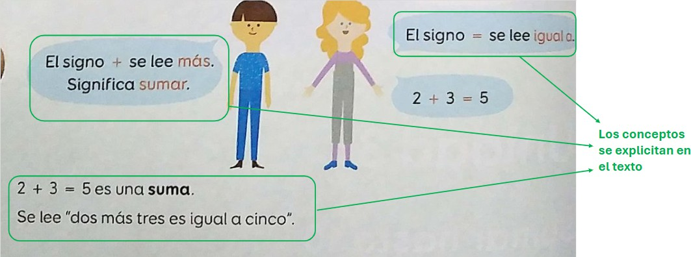
Cabe destacar que las explicaciones están redactadas en un lenguaje sencillo y accesible para los alumnos. Este material no solo les permite repasar los conceptos en casa, sino que también le sirve al docente como una base sólida para sus explicaciones. Estas instancias de explicitación de contenidos se presentan de manera sistemática para todos los conceptos. A continuación, mostramos la explicación para la resta:
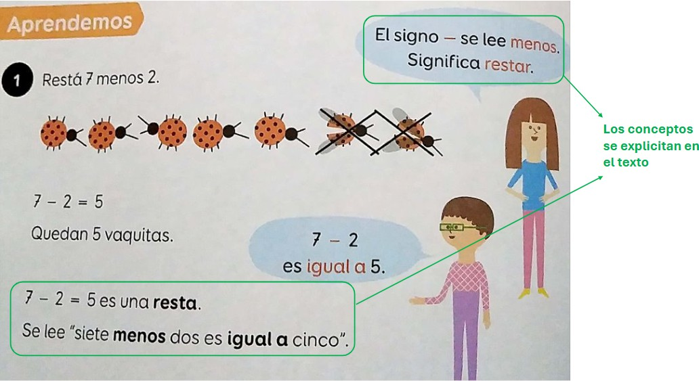
El libro para el alumno no solo se enfoca en explicar los conceptos matemáticos, sino que también proporciona diversas estrategias para resolver los problemas planteados. Cada método de resolución se presenta de manera clara y estructurada en apartados específicos, acompañados de explicaciones detalladas y ejercicios prácticos diseñados para ayudar a los estudiantes a comprender y aplicar cada enfoque.
Esta organización permite a los alumnos explorar diferentes estrategias de resolución sin sentirse abrumados, promoviendo la flexibilidad cognitiva y adaptándose a distintos estilos de aprendizaje.
A continuación, mostramos un ejemplo concreto de cómo se presentan estas estrategias para la operación de la suma:
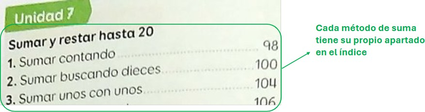
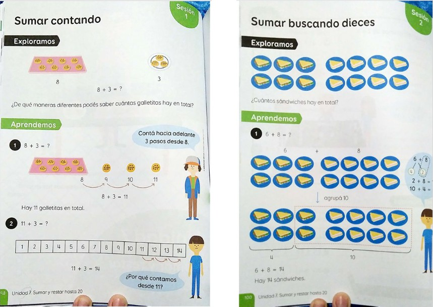
El libro inclusive ofrece explicaciones para los algoritmos clásicos de resolución de cuentas de una manera que fortalece la comprensión conceptual y no se basa simplemente en la incorporación de un hábito mecánico. El siguiente es un ejemplo de cómo se explicita el algoritmo de la suma. Nótese que la explicación se construye a partir de representaciones visuales de objetos concretos que los alumnos suelen utilizar cotidianamente en la metodología
C.R.A (los bloques multibase):
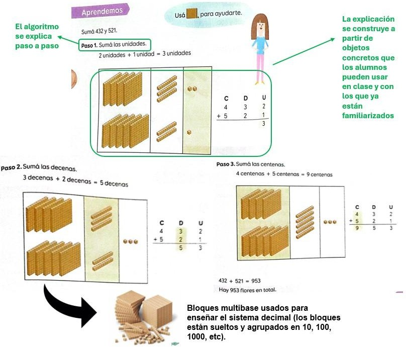
De este modo, los alumnos pueden aprender el algoritmo tradicional de la suma a partir de conocimientos previos, priorizando siempre la comprensión conceptual antes que la memorización mecánica. Este enfoque permite que los estudiantes construyan un entendimiento sólido del procedimiento, comprendiendo no solo cómo se hace, sino también por qué funciona.
Además, el material sirve como un recurso de apoyo tanto para los docentes como para los estudiantes. Los docentes pueden utilizar estas explicaciones para complementar sus enseñanzas en el aula, mientras que los alumnos pueden regresar a esta sección del libro cuando necesiten repasar el procedimiento o resolver dudas.
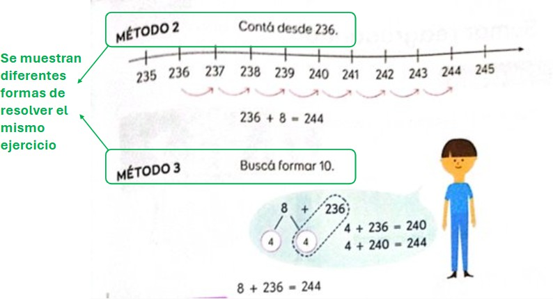
Este tipo de explicación detallada se aplica a múltiples ejemplos que involucran el uso del algoritmo, ordenados de menor a mayor complejidad. El primer ejemplo aborda el caso más sencillo, y gradualmente se presentan cálculos más complejos, abordando de manera clara y explícita la situación de "llevarse uno" cuando la suma vertical alcanza o supera el 10, uno de los aspectos más desafiantes del método tradicional.De esta forma, los estudiantes cuentan con ejemplos completos y comprensibles que abarcan todas las posibles variaciones del algoritmo, permitiéndoles aplicar el procedimiento de manera precisa y con confianza.
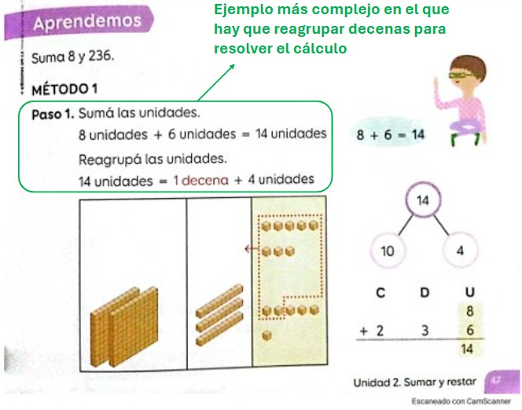
Asimismo, en estos materiales se aprovecha el ejemplo para recordarle a los alumnos que pueden usar distintas estrategias para resolver el mismo ejercicio. El libro presenta estos diferentes métodos de manera explícita. Recordemos que cada una de estas herramientas de resolución fue comprendida y trabajada individualmente para facilitar su interiorización:
Materiales con enfoque psicogenético
Estos materiales se caracterizan por incluir muy poca enseñanza explícita en su libro de texto. Esta decisión está alineada con la metodología propuesta por el material, la cual promueve un enfoque de clase basado en la exploración y el descubrimiento autónomo por parte de los estudiantes con guía del docente.
El libro busca que se presente un problema a los alumnos sin intervenciones iniciales del docente, buscando que los estudiantes intenten resolverlo de manera independiente. Posteriormente, se comparten y analizan las respuestas de todos. En esta instancia se espera que surjan distintas estrategias y errores comunes que permitan explicar los conceptos implícitos en los problemas. La responsabilidad de explicar y formalizar estos conceptos recae completamente en el docente, quien debe interpretar las respuestas de los estudiantes y, a partir de ellas, intentar elaborar explicaciones claras y precisas. A continuación se incluye un fragmento del Libro del Docente de Expedición Matemática que explica esta dinámica:
“Hay un interjuego en la clase entre momentos que invitan a explorar, probar, ensayar y otros en los que el trabajo reflexivo se dirige a reordenar la búsqueda y a sistematizar los conocimientos que se espera puedan ser reutilizados. (...) De alguna manera se trata de alentar cierta ‘copia’ de recursos producidos individualmente luego de haber sido analizados, estudiados y comprendidos de forma colectiva” (pág. 6)
En este enfoque, se pretende que los contenidos se expliquen a partir de la resolución de problemas realizados por los estudiantes, pero qué contenidos deben explicarse no está dicho ni siquiera en el Libro del Docente que acompaña a los materiales que reciben los estudiantes. Por ejemplo, a continuación mostramos la primera vez que aparece la operación de la suma en este material. Nótese que en ningún momento se explicita que lo que los estudiantes están haciendo es sumar, ni tampoco se incluye ninguna explicación o aclaración de cómo hacerlo:
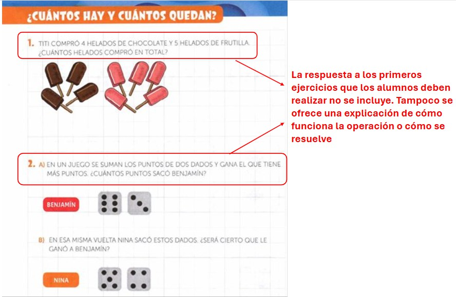
La metodología propuesta en el Libro del Docente sugiere que los alumnos resuelvan los ejercicios de la imagen anterior y, a partir de sus respuestas, el docente organice una puesta en común para sistematizar el aprendizaje, pero no está claro qué se debe aprender: ¿qué estrategias se espera que los estudiantes utilicen para sumar correctamente? ¿En qué momento se les enseña a sumar contando hacia adelante, como es mencionado en la introducción de este artículo? No sólo no se aclara cuándo se debe enseñar esta estrategia clave, sino que el Libro del Docente ni siquiera la menciona.
Además, aplicar este enfoque en niños de 1.º, 2.º e incluso 3.º grado puede resultar complicado, ya que organizar un debate en el aula a estas edades es más complejo, más aún en aulas como las que tenemos en Argentina, donde muchas veces hay 25 o 30 alumnos. Para empeorar la situación, los profesores no cuentan con recursos que les expliquen cómo enseñar a sumar, restar u organizar un debate en el aula de manera sistemática.
El propio material para docentes reconoce las limitaciones de esperar que todos los contenidos se enseñen únicamente a partir de las respuestas de los estudiantes. A continuación se incluye un fragmento del Libro del Docente antes mencionado en donde se admite esta problemática:
"Es preciso reconocer que no es posible que los alumnos produzcan todo aquello que se espera que aprendan. En este sentido, es función de la escuela y de los maestros, también de los libros, poner en diálogo las elaboraciones y recursos de los niños con aquello que se pretende enseñar y sistematizar.
Enseñar matemática implica entonces también ofrecer a los estudiantes algunos recursos que son propios de la matemática escolar. Nos referimos a definiciones, notaciones, técnicas, explicaciones, etc. Es por eso que al interior de algunos capítulos, y de manera solidaria con las actividades que se van proponiendo, se presentan carteles que se espera que sean leídos y analizados entre todos, cuya información resulta necesaria para seguir trabajando." (página 6)
Para abordar este desafío, propone el uso de apartados llamados "Información para leer entre todos", donde se proporciona instrucción directa desde el libro. Estos segmentos tienen el propósito de complementar el enfoque exploratorio, ofreciendo a los alumnos información clara y precisa cuando los conceptos resultan demasiado complejos para ser deducidos de forma autónoma.
No obstante, estos carteles son notablemente escasos y breves. Suelen limitarse a aclaraciones sobre notación y rara vez facilitan la comprensión profunda de los conceptos o métodos de resolución. Por ejemplo, en las primeras 58 páginas del libro, que abarcan cuatro unidades y temas clave como el conteo, la ordenación de números, el sistema decimal, la suma y la resta, solo se incluyen dos carteles de este tipo. En todo este recorrido, los estudiantes reciben únicamente dos instancias de instrucción directa, mostradas a continuación:
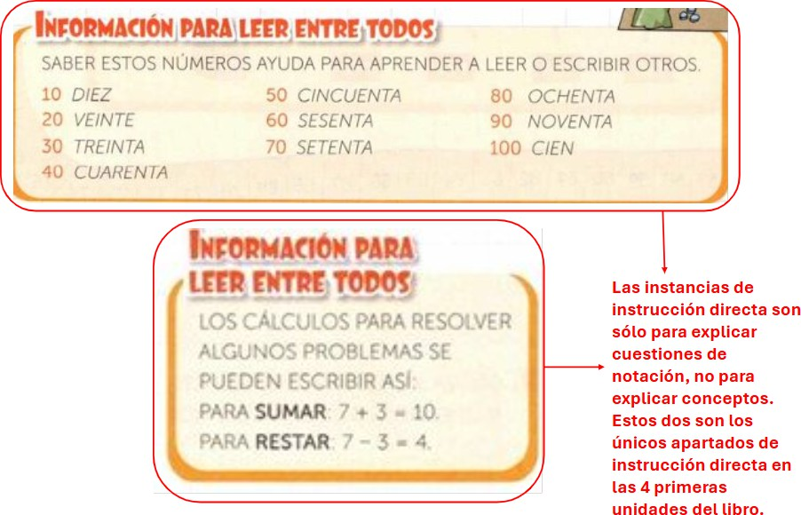
Además de problemas convencionales, este material también incluye preguntas que fomentan la reflexión y el análisis. Generalmente no requieren realizar cuentas, sino hacer distinciones conceptuales. Este tipo de preguntas se presentan en las secciones llamadas “Mate-ronda entre todos”, donde se promueve el debate colectivo. A continuación, mostramos el apartado del Libro del Docente que explica estas secciones y un ejemplo en el que se invita a los estudiantes a expresar la diferencia entre un problema de suma y uno de resta:
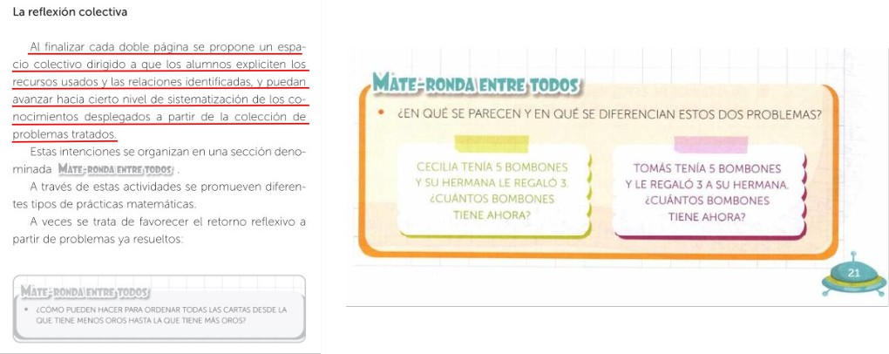
El libro no muestra de manera explícita ningún método de resolución. Aunque busca que los alumnos desarrollen distintas estrategias para abordar una misma operación, no las presenta de forma clara ni las desarrolla una por una. En lugar de eso, muestra anotaciones que eventualmente se podrían realizar para resolver un problema, y sugiere a los estudiantes que las analicen e intenten deducir qué habrán pensado quienes las escribieron. A modo de ejemplo, el siguiente ejercicio tiene como objetivo, supuestamente, que los alumnos incorporen diversas formas de realizar la misma suma:
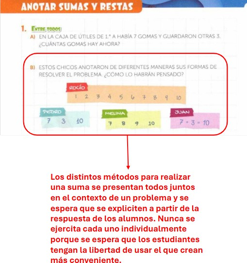
Cabe destacar que no se aclara qué estrategia de resolución representa cada una de las respuestas, ni siquiera en el Libro de Docentes. Además, el material para docentes tampoco detalla las herramientas de resolución que se espera que los alumnos aprendan para cada operación. Esto significa que la variedad de estrategias que los niños vayan a aprender depende exclusivamente del conocimiento del docente y su interpretación del contenido, aunque muchas veces hace años que terminaron el profesorado y que no enseñan en primer grado.
En conclusión, los libros que usan la perspectiva C.R.A, le dan un papel protagónico a la instrucción directa en la enseñanza de todos los conceptos. A los estudiantes siempre se les brindan ejercicios resueltos antes de que tengan
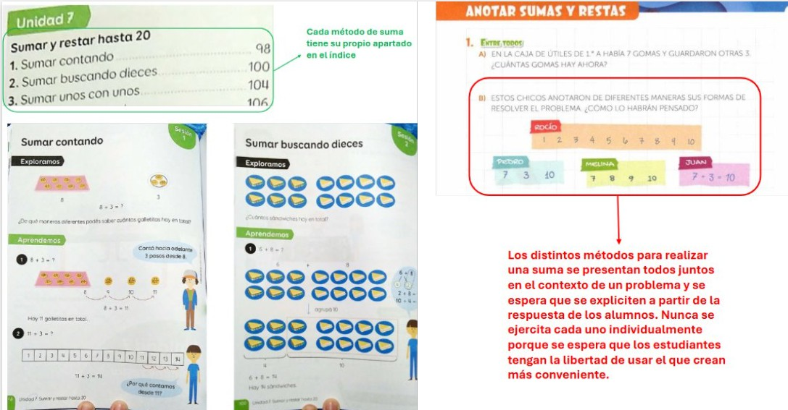
que realizar otros por su cuenta, y los múltiples métodos de resolución que se espera que los alumnos aprendan están explicitados uno por uno y tienen su ejercitación individual. Esto ayuda a la labor docente porque siempre tienen explicaciones en el libro en las cuales apoyarse para desarrollar un concepto, y los alumnos también tienen la posibilidad de disipar dudas en sus casas.Por otro lado, en los materiales analizados con perspectiva psicogenética, prácticamente no se incluye enseñanza explícita y casi todo el aprendizaje se basa en la resolución de problemas cuya respuesta no se presenta en el libro. Se espera que la explicación de los conceptos y estrategias sea elaborada por el docente a partir de las respuestas de los alumnos, pero el material de apoyo para docentes no aclara cuáles son las estrategias a aprender ni cómo organizar el debate en el aula.
Este enfoque deja más desamparados no sólo a los profesores, sino también a los estudiantes y sus familias, cuyas dudas conceptuales no podrán ser resueltas con el libro de texto una vez en sus casas. A continuación, mostramos imágenes de cada libro lado a lado para que sean más evidentes las diferencias anteriormente señaladas:
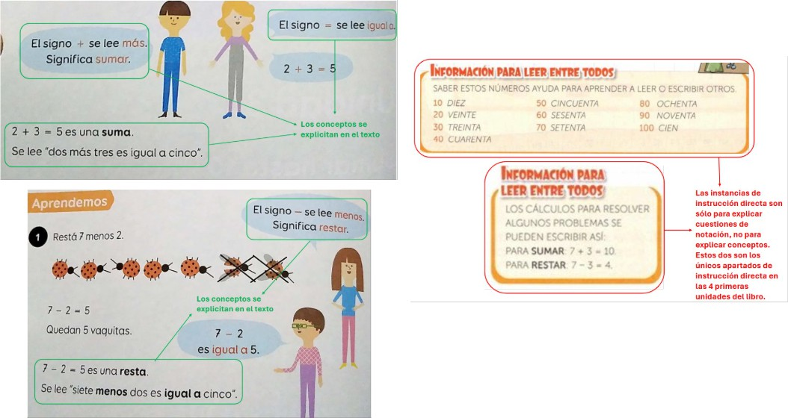
Apoyo concreto y visual
Materiales basados en el enfoque C.R.A
En estos materiales se otorga una gran importancia al uso de material concreto, que se pueda tocar, y al acompañamiento visual, tanto en la enseñanza de conceptos como en la resolución de ejercicios. Cada nuevo concepto se introduce con una amplia variedad de recursos gráficos que presentan las nociones matemáticas de la manera más intuitiva y accesible para el estudiante. Nótese que la información se presenta a través de diversos estímulos: el alumno recurre primero a la información visual, luego la relaciona con la notación matemática arbitraria y, finalmente, se implementa el lenguaje escrito. A continuación se muestra cómo este tipo de material introduce la suma:
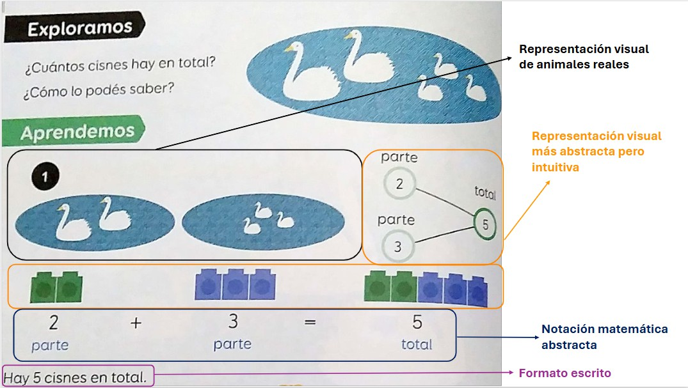
Este enfoque consiste en presentar cada concepto primero con objetos reales, preferentemente manipulables, para que los estudiantes se involucren activamente en el aprendizaje. Por ejemplo, los bloques mostrados en la imagen anterior son materiales físicos con los que los alumnos pueden interactuar en clase, ya sea uniéndolos para comprender la suma o separándolos para entender la resta. Abajo mostramos los bloques físicos a los que corresponden los dibujos:
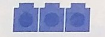
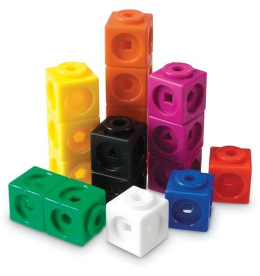
Tras la manipulación de objetos, se trabaja con representaciones visuales que, aunque más abstractas, siguen siendo intuitivas. En el ejercicio presentado previamente se observa la representación gráfica de los bloques utilizados en clase, así como un diagrama numérico con líneas conectadas. Este nivel de representación, aunque más abstracto, permite a los estudiantes conectar fácilmente su experiencia manipulativa con la nueva información visual. Finalmente, se introduce la notación matemática convencional una vez que el alumno ha interiorizado el concepto mediante las representaciones previas. De esta manera, se ofrece un sólido apoyo visual al estudiante, asegurando que no solo resuelva el problema, sino que también comprenda los fundamentos detrás de cada operación. La misma estrategia se aplica al segundo problema de suma presentado al estudiante:
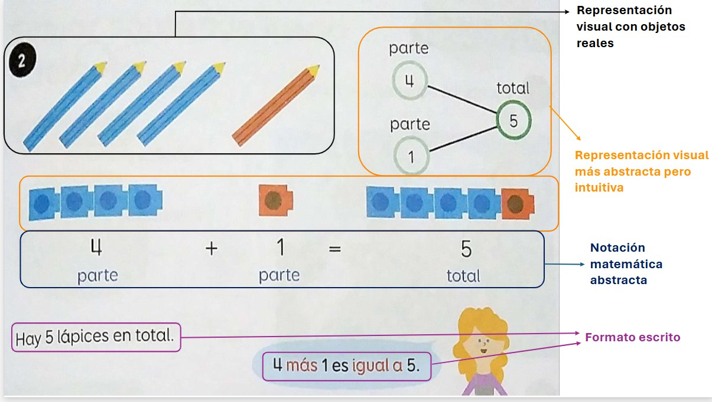
El apoyo visual no solo facilita el aprendizaje del alumno, sino que también se convierte en una herramienta valiosa para el docente, quien puede apoyarse en estos recursos gráficos durante sus explicaciones. Además, los ejercicios propuestos a los alumnos también incluyen representaciones visuales que refuerzan la comprensión y consolidación del conocimiento:
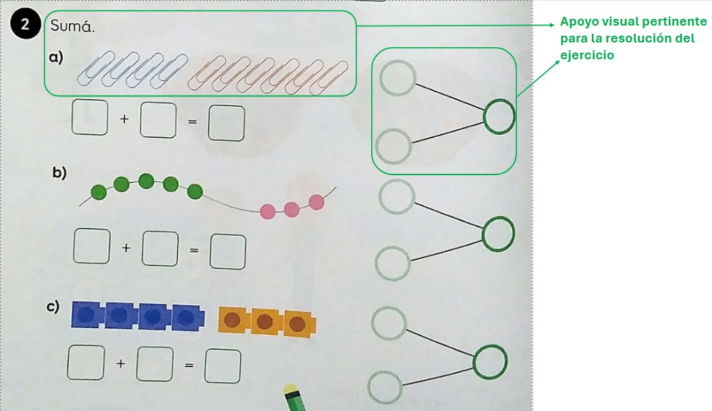
Materiales con enfoque psicogenético
En contraste, el apoyo visual en los materiales que siguen una perspectiva psicogenética es muy limitado y poco claro. En muchos casos, los problemas se presentan únicamente de forma escrita, sin ningún tipo de acompañamiento gráfico. Y cuando se incluyen recursos visuales, estos suelen ser imprecisos o insuficientes para facilitar la resolución de los ejercicios. Además, las representaciones gráficas suelen mostrarse en una única modalidad, sin establecer conexiones entre diferentes formas de representación del mismo concepto. Por ejemplo, a continuación mostramos la primera vez que aparece la operación de la suma en estos manuales:
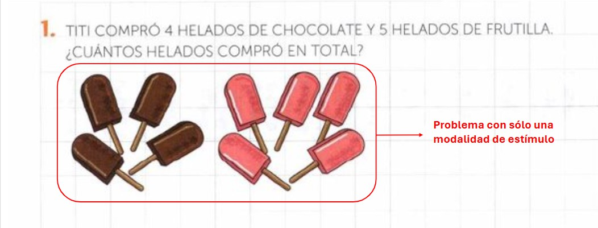
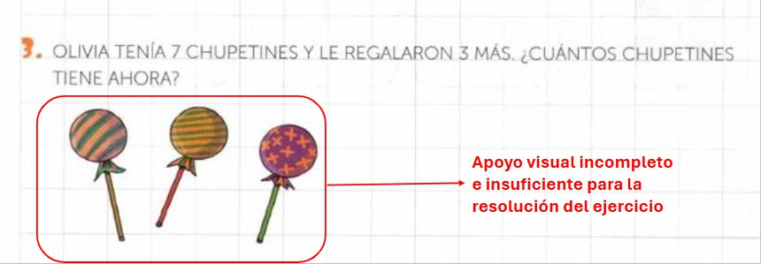
Si bien el dibujo presentado ayuda a resolver el ejercicio, es el único recurso disponible. No se muestra la cuenta con notación matemática para que el estudiante la relacione con la imagen, ni se incluyen otras representaciones visuales que permitan comprender la información de diversas maneras. Aun así, este es uno de los ejemplos más completos de acompañamiento visual en el libro, ya que la mayoría de las veces los gráficos no son suficientes para guiar la resolución de los problemas. Por ejemplo, a continuación mostramos el tercer ejercicio de suma que se le pide solucionar a los estudiantes:La operación correcta para resolver el problema es 7 + 3 = 10, pero el recurso gráfico solo muestra 3 de los 10 elementos que forman el total. Esta representación incompleta resulta confusa, especialmente considerando que el estudiante aún está en proceso de consolidar la operación. Para empeorar la situación, después de este ejercicio de suma (¡el tercero del libro!), los apoyos visuales se eliminan por completo:
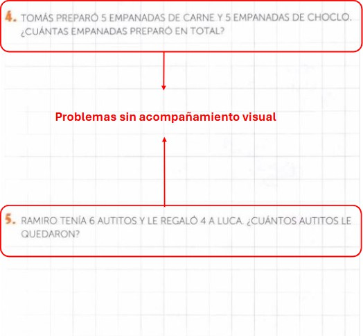
Incluso, el libro comienza a mezclar ejercicios de suma con ejercicios de resta sin haber presentado previamente cada operación por separado.
En conclusión, el uso adecuado de múltiples modalidades de estímulo en la enseñanza de la matemática es fundamental para la comprensión efectiva de los conceptos. Mientras que los manuales con perspectiva C.R.A implementan un enfoque estructurado, facilitando la transición de lo concreto a lo abstracto, los manuales con perspectiva psicogenética carecen de una sistematización clara para apoyar al estudiante en este proceso. La ausencia de representaciones múltiples y el uso inconsistente de recursos gráficos pueden dificultar el aprendizaje, especialmente en los primeros niveles de instrucción.
Es crucial que los materiales educativos prioricen el uso de herramientas visuales claras y progresivas que acompañen al estudiante en su desarrollo matemático. A continuación mostramos imágenes de cada libro lado a lado para que sean más evidentes las diferencias señaladas anteriormente:
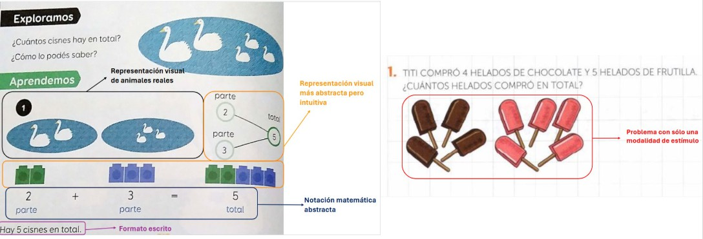
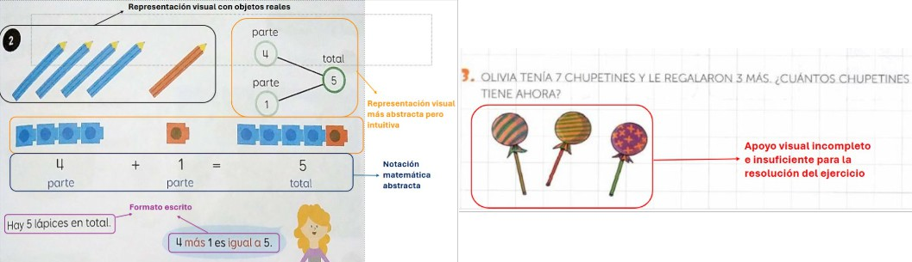
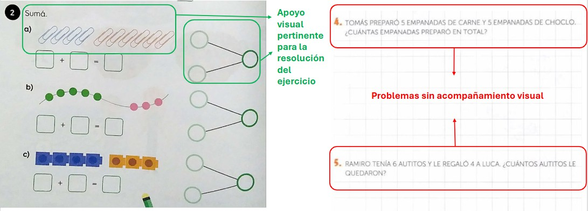
Organización del aprendizaje
Materiales basados en el enfoque C.R.A
En el manual analizado, el aprendizaje se organiza en etapas bien diferenciadas, que se construyen una sobre la otra como escalones. Cada una de estas etapas responde a un tipo distinto de aprendizaje: el aprendizaje por indagación —que ocurre cuando los estudiantes exploran, hacen preguntas y buscan sus propias respuestas—, el aprendizaje por instrucción directa —que ya analizamos— y el aprendizaje a través de actividades, en donde el conocimiento se incorpora haciendo, mediante tareas concretas o juegos que invitan a participar activamente.
Todo comienza con la etapa “Exploramos”, una etapa muy breve, donde se propone a los estudiantes abordar un problema utilizando sus propios recursos e ideas. Lejos de buscar una única respuesta correcta, este primer momento apunta a despertar la curiosidad y activar el pensamiento. Así, el alumno se mete en el tema casi sin darse cuenta, probando estrategias, planteando hipótesis y ensayando soluciones. Un ejemplo típico de esta sección podría ser el siguiente:
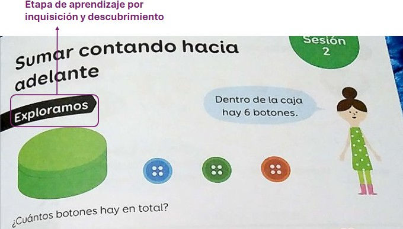
Después de este primer momento de exploración, llega la etapa “Aprendemos”, que cumple una función clave: ofrecer una instrucción clara y ordenada. En esta sección, el docente explica paso a paso cómo se resuelve el problema que los chicos intentaron abordar por sus propios medios en la etapa anterior. Es el momento donde entra en juego la enseñanza explícita: se presentan las estrategias correctas, se despejan dudas y se construyen las herramientas necesarias para avanzar:
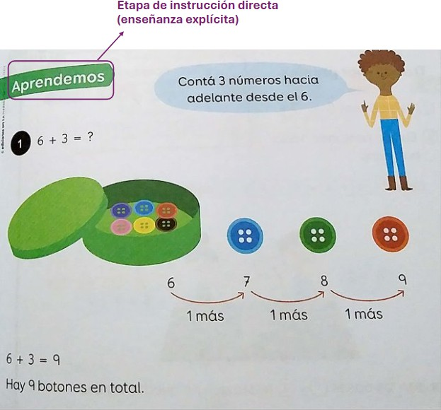
Una vez que los estudiantes ya exploraron el problema por su cuenta y luego recibieron una explicación profunda, clara y estructurada, llega el momento de poner en práctica lo aprendido. Eso ocurre en la sección “Practicamos”, donde se proponen ejercicios concretos para reforzar los conceptos recién incorporados. Esta etapa responde al aprendizaje por actividades: se invita a los chicos a resolver problemas de forma individual o en grupo, con consignas que buscan afianzar lo visto de manera activa. Las tareas están pensadas para ser accesibles e intuitivas porque retoman los mismos recursos visuales que ya se utilizaron en las etapas anteriores. Así, los alumnos no arrancan de cero:
trabajan sobre una base familiar que les permite aplicar los nuevos conocimientos con mayor seguridad:
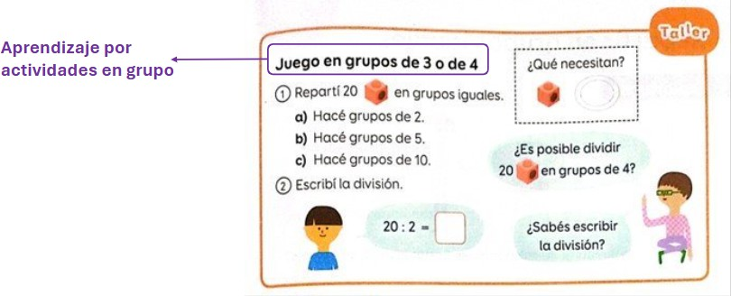
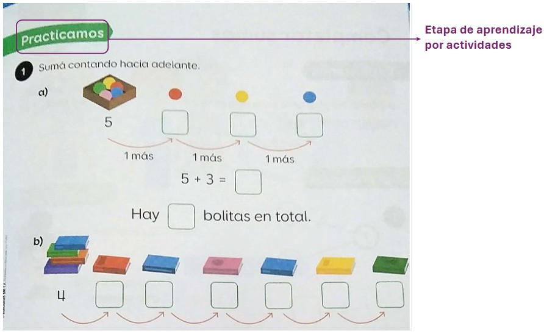
Esta división en secciones da al aprendizaje una estructura más clara y ordenada. De ese modo, se asegura que todos los estudiantes pasen por las distintas etapas necesarias para comprender un concepto en profundidad. Al mismo tiempo, esta organización también le facilita la tarea al docente: cada tema viene acompañado de una progresión pensada de antemano, que sirve como guía para planificar y enseñar. Y lo mejor es que no se trata de una estructura rígida: el docente puede adaptarla, modificarla o salirse de ella cuando lo considere necesario, pero siempre tiene un camino sólido al que volver si lo necesita.
Por último, cada unidad cierra con una sección de repaso que cumple una doble función: consolidar lo aprendido y hacer visible el progreso. Primero se propone una actividad integradora que retoma los contenidos y estrategias trabajadas a lo largo del capítulo. Luego, se presenta una lista con todos los aprendizajes clave de la unidad y los alumnos pueden marcarlos uno por uno. Este recurso no solo les permite tomar conciencia de lo que ya saben, sino que también le sirve al docente para hacer un seguimiento claro de los contenidos abordados. Así, tanto estudiantes como maestros pueden visualizar el recorrido hecho y tener un cierre ordenado antes de pasar a la siguiente etapa:
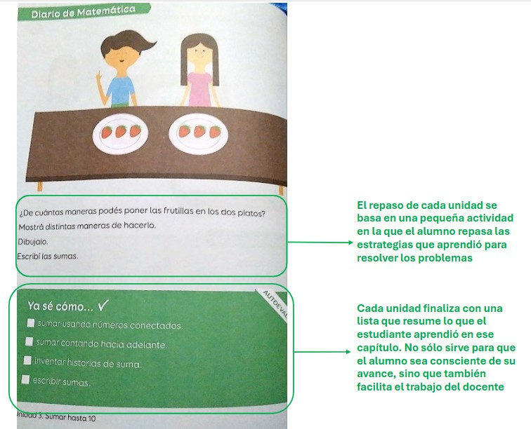
Materiales con enfoque psicogenético
En estos materiales no se organiza el aprendizaje en etapas claramente delimitadas. Su enfoque es flexible. Se presenta una actividad que los chicos deben intentar resolver con los conocimientos que tienen hasta el momento, luego se ponen en común las distintas respuestas y se abre un espacio de debate en el que se explicitan los contenidos y se corrigen errores. Esta dinámica, explicada en detalle en la sección 3.1.2 de este informe, atraviesa buena parte del libro.
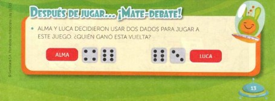
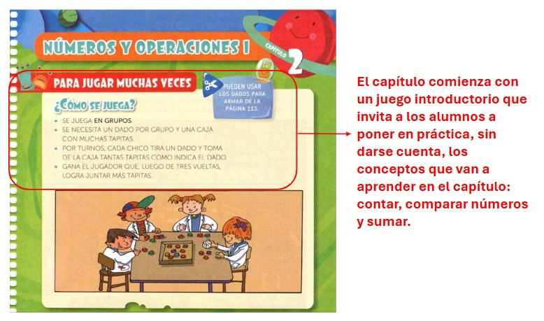
Algo que se destaca en estos materiales es que al inicio de cada unidad, siempre se propone un juego como puerta de entrada a los contenidos. La intención es que los alumnos empiecen a familiarizarse con los conceptos matemáticos de manera implícita, jugando, sin que nadie se los explique formalmente. La idea es que, mientras intentan ganar, los chicos pongan en práctica estrategias que luego serán analizadas colectivamente. Un ejemplo del tipo de juegos que se incluyen en el inicio de los capítulos es el siguiente:Después de varias partidas, el libro sugiere incluir una actividad de reflexión donde los alumnos puedan explicitar, a través del debate y mediante guía docente, los conceptos que estuvieron en juego. A partir de esa introducción lúdica, el enfoque sigue con la dinámica ya descrita: se presenta un problema (por lo general sólo en modalidad escrita, sin representación gráfica), los alumnos intentan resolverlo con las herramientas que ya tienen, se comparten las respuestas y se abre un espacio de intercambio. En estos momentos, el rol del docente no es el de expositor, sino el de facilitador del debate: su tarea es guiar la reflexión colectiva para que los estudiantes lleguen por sí mismos a las conclusiones clave. Pero a qué conclusiones deben llegar o qué preguntas se podrían realizar para guiar el debate, no están listadas en ningún lado, ni siquiera en el Libro del Docente.
La única otra instancia en la que el manual propone una estructura más concreta es en el cierre de las unidades. Al final de cada capítulo se incluye una sección de ejercicios de repaso (sin las respuestas), pensada para revisar lo aprendido desde una mirada más reflexiva y colectiva. Un buen ejemplo de este tipo de instancias es el siguiente:
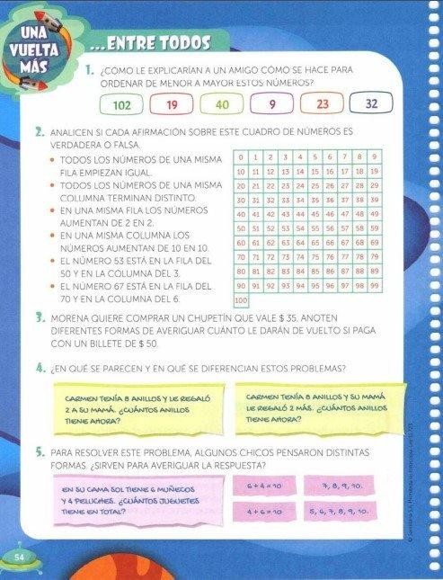
En definitiva, este enfoque no plantea una sistematización ni propone un camino claro para el docente. A diferencia de otros enfoques que organizan el aprendizaje en etapas secuenciales —exploración, instrucción, práctica, repaso—, este material se basa en una lógica más abierta, centrada en la idea de guiar el proceso de reflexión de los chicos. No hay orientaciones precisas sobre cómo estructurar el recorrido de aprendizaje ni sobre qué decisiones didácticas tomar en cada momento.
Lo que suele predominar en las propuestas del libro son actividades centradas en la reflexión, la exploración y el debate colectivo. Y si bien estas instancias son valiosas, su efectividad depende en gran medida de cómo se implementan. ¿Cuándo se termina el debate? ¿En qué momento se aclara cuál es la respuesta correcta? ¿Cómo y cuándo se pasa al ejercicio siguiente? ¿Qué hacer si los estudiantes no logran arribar a la idea clave por sí solos? Todas esas decisiones quedan en manos del docente, que no cuenta con material de apoyo.
04Discusión y conclusión
Este último punto, el de la poca organización por etapas de los aprendizajes es algo común a todos los manuales con enfoque psicogenético. Sumado a la falta de apoyo visual y concreto sistemático y a la casi total ausencia de explicitación de los contenidos, tanto en los cuadernillos para los estudiantes al que tienen acceso las familias, como en el Libro Docente, la metodología psicogenética parece, como mínimo, ineficiente. Es una propuesta que ignora la realidad argentina y está poco fundamentada en datos e investigaciones científicas. Como mencionamos anteriormente, con un promedio de 25 alumnos por clase –dos o tres integrados–, el sistema argentino parece estar diseñado para el agotamiento mental de los docentes.
A quienes miren con desconfianza nuestra conclusión, los invitamos a pensar las siguientes preguntas: ¿por qué omitir información fundamental para el aprendizaje?; ¿por qué no llevar a las familias conceptos explícitos que les den herramientas y tranquilidad a la hora de acompañar a las infancias en el proceso de adquisición de los contenidos?; ¿por qué pensar que la información clara quita la posibilidad de desarrollar infancias creativas y exploradoras?
Nuestra intención no es proponer que Argentina debe ‘importar’ un modelo calcado de otros países, sino encontrar un camino propio que tenga en cuenta tanto nuestra realidad como todo lo que la evidencia sugiere para la mejora de los aprendizajes.
Así como la evidencia científica apoya, claramente, que el trabajo con la conciencia fonológica es fundamental para permitir a los niños y niñas decodificar el lenguaje escrito, del mismo modo, la evidencia sugiere que explicitar los contenidos matemáticos es fundamental para que los estudiantes aprendan y comprendan.
Si logramos que nuestras escuelas sigan un enfoque que priorice la enseñanza explícita y sistemática, los docentes tendrán material al cual acudir para la planificación de sus clases; las familias encontrarán información clara para acompañar desde sus casas; y, sobre todo, los estudiantes volverán a enamorarse de la matemática, apropiándose de los contenidos y avanzando en todos sus aprendizajes.
Notas
- Este documento fue producido a través de un contrato de locación de servicios entre la Universidad Torcuato Di Tella y la Fundación Educere. Establece un programa de investigación bajo la coordinación del profesor Dr. Andrés Rieznik, la supervisión de la Mag. Victoria Zorraquin, y la asistencia en investigación de Luca Ciatti y Chiara Loggia, estudiantes de la carrera de Tecnología Digital de la universidad. ↩